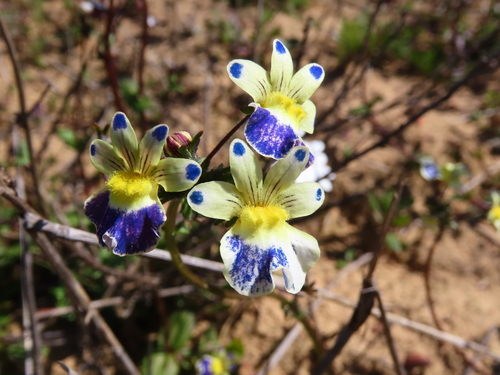

Buddlejaceae
(Butterfly Bush group - Now included in Scrophulariaceae)
Buddlejaceae is a former family of flowering plants, primarily comprising the genus Buddleja (Butterfly Bush). Based on molecular phylogenetic studies, this family is no longer recognized as distinct and its members are now included within the family Scrophulariaceae (Figwort family) in the order Lamiales. Plants formerly in Buddlejaceae are typically shrubs or small trees with opposite leaves (often hairy), dense clusters of often fragrant, 4-merous flowers, and capsule fruits.
Overview
While traditionally recognized, the family Buddlejaceae is now subsumed within the large family Scrophulariaceae based on robust molecular evidence. The description here focuses on the main genus previously central to the family concept: Buddleja, commonly known as Butterfly Bush.
Buddleja species are predominantly shrubs (less commonly trees, vines, or herbs) found mainly in tropical and subtropical regions of the Americas, Africa, and Asia. They are widely recognized for their often dense, showy inflorescences (panicles, spikes, or heads) bearing numerous small, tubular flowers that are typically highly fragrant and attract pollinators, especially butterflies (hence the common name). Many species have leaves with distinctive stellate (star-shaped) or dendritic (branched) hairs, often giving the undersides a whitish or yellowish tomentose appearance.
Several Buddleja species, most notably B. davidii, are popular garden ornamentals worldwide. However, B. davidii has also become an invasive weed in many temperate regions outside its native range (China). Understanding their current placement within Scrophulariaceae is key to appreciating their evolutionary relationships within the order Lamiales.
Quick Facts (Based on former family concept, primarily Buddleja)
- Scientific Name: Buddlejaceae R.Br. ex DC. (Taxonomic status changed; members now in Scrophulariaceae)
- Common Name: Butterfly Bush group
- Number of Genera: ~4 historically (Buddleja being dominant)
- Number of Species: ~130 historically (Buddleja has ~100-120 species)
- Distribution: Tropical/subtropical Americas, Africa, Asia (genus Buddleja).
- Current Evolutionary Group: Eudicots - Asterids - Lamiids - Lamiales -> Scrophulariaceae
Key Characteristics (Focusing on Buddleja)
Growth Form and Habit
Mostly shrubs, ranging from small to large, some small trees, rarely lianas or herbs. Young stems, leaves, and inflorescences are often covered in characteristic stellate (star-shaped) or dendritic (branched) hairs, creating a whitish or yellowish tomentose layer.
Leaves
Leaves are typically arranged oppositely (rarely alternate or whorled) and are usually simple. Leaf margins are commonly entire or toothed (serrate or dentate). A distinctive feature is often the presence of interpetiolar stipules (stipules fused between the petioles of opposite leaves) or at least a raised line connecting the petiole bases.
Flowers and Inflorescence
Flowers are usually arranged in dense, terminal or axillary inflorescences, commonly panicles, spikes, or globose heads. Individual flowers are typically bisexual, radially symmetrical (actinomorphic) or nearly so, and characteristically 4-merous (sometimes 5-merous).
- Calyx: 4 (or 5) sepals, fused into a tubular or bell-shaped structure with short lobes, persistent.
- Corolla: 4 (or 5) petals, fused into a tubular or salverform (narrow tube, abruptly flared limb) shape, with 4 (or 5) spreading lobes. Often fragrant, with colors ranging from lilac, purple, pink, white to yellow or orange.
- Stamens: 4 (or 5), attached to the corolla tube (epipetalous), typically shorter than the tube (included) or barely exserted.
- Ovary: Superior, composed of 2 fused carpels forming 2 locules. Placentation is axile with numerous ovules. A single terminal style ends in a capitate (head-like) or clavate (club-shaped) stigma, sometimes slightly 2-lobed.
Fruits and Seeds
The fruit is typically a dry, dehiscent septicidal capsule (splitting along the partitions between the locules) into two valves, often remaining enclosed within the persistent calyx. Rarely, the fruit can be a berry or drupe in some related genera formerly included in Buddlejaceae.
Seeds are numerous, small, and often winged or spindle-shaped, facilitating wind dispersal.
Chemical Characteristics
Plants often contain iridoid glycosides (common in Lamiales), saponins, and flavonoids. The characteristic hairs are morphological, not chemical, but contribute significantly to identification.
Field Identification (Focusing on Buddleja)
Identifying Buddleja (the main component of the former Buddlejaceae) typically involves recognizing the shrubby habit, opposite leaves often with specific hair types, characteristic flower clusters, and 4-merous flowers:
Primary Identification Features
- Habit: Usually a shrub.
- Leaves: Opposite, simple, often with stellate or dendritic hairs (appearing whitish/yellowish beneath). Look for interpetiolar stipules or lines.
- Inflorescence: Dense panicles, spikes, or globose heads of many small flowers.
- Flowers: Usually 4-merous (4 sepals, 4 corolla lobes, 4 stamens), radially symmetric, tubular or salverform, often fragrant.
- Fruit: Typically a septicidal capsule (2-valved).
Secondary Identification Features
- Stamens: Included within the corolla tube or barely exserted.
- Ovary: Superior, 2-loculed.
- Habitat: Often found in open or disturbed areas, along streams, or cultivated in gardens; native range mostly tropical/subtropical.
Seasonal Identification Tips
- Flowering Season: Most easily recognized during summer or the relevant tropical flowering season when the dense, often fragrant flower clusters are prominent and attract butterflies.
- Fruiting Season: Persistent capsules may be visible after flowering.
- Year-round: The shrubby habit, opposite leaf arrangement, and often persistent hairs (especially on undersides of leaves) provide clues year-round. Check for interpetiolar stipules/lines.
Common Confusion Points
- Verbenaceae/Lamiaceae: Some shrubs in these families (also Lamiales) have opposite leaves and dense flower spikes/heads (Lantana, some Verbena, some mints). However, they typically have strongly zygomorphic (bilabiate) flowers and/or 5-merous flowers, often square stems (Lamiaceae), and different fruit types (drupes, nutlets).
- Other Scrophulariaceae: Since Buddleja is now in this family, differentiation is internal. Many other Scrophulariaceae are herbs or have distinctly zygomorphic flowers (Verbascum has 5 stamens, Scrophularia has unique flower shape).
- Caprifoliaceae (e.g., Abelia, Weigela, Lonicera): These shrubs often have opposite leaves and tubular flowers, but flowers are typically 5-merous, stamens number varies, and ovaries are usually inferior, leading to different fruit types (capsules, berries, achenes).
The combination of shrub habit, opposite leaves often with stellate/dendritic hairs and interpetiolar stipules, dense inflorescences, 4-merous regular flowers, and septicidal capsules is highly characteristic of Buddleja.
Field Guide Quick Reference (Buddleja)
Look For:
- Shrub habit (mostly)
- Opposite, simple leaves
- Often stellate/dendritic hairs (esp. below)
- Interpetiolar stipules or line
- Dense panicles, spikes, or heads
- Flowers small, tubular/salverform, often fragrant
- Flowers usually 4-merous (4 sepals, 4 lobes, 4 stamens)
- Fruit a septicidal capsule (2-valved)
Key Variations:
- Flower color (lilac, purple, white, yellow, orange)
- Inflorescence shape (paniculate vs. globose)
- Leaf shape and size
- Degree of hairiness
- Alternate leaves (rare, e.g., B. alternifolia)
Notable Examples (Genus Buddleja)
The genus Buddleja contains many popular ornamental shrubs.

Buddleja davidii
Butterfly Bush, Summer Lilac
Native to China, this fast-growing shrub is widely cultivated globally for its large, dense, fragrant panicles of lilac, purple, pink, or white flowers that are highly attractive to butterflies. Leaves are opposite, lanceolate, with white-tomentose undersides. It has become invasive in many temperate regions.

Buddleja globosa
Orange Ball Tree
Native to the Andes (Chile, Argentina). A large shrub or small tree known for its distinctive spherical heads of fragrant, bright orange-yellow flowers. Leaves are opposite, lanceolate, with wrinkled upper surfaces and yellowish-hairy undersides.

Buddleja alternifolia
Fountain Butterfly Bush
Native to China. Unlike most species, this large shrub has alternate leaves. It is known for its gracefully arching branches covered in clusters of fragrant lilac-purple flowers in early summer along the previous year's wood.
Phylogeny and Classification
Historically treated as a distinct family (Buddlejaceae), molecular phylogenetic studies have conclusively demonstrated that the genus Buddleja and its close relatives are deeply embedded within the family Scrophulariaceae (Figwort family). Therefore, Buddlejaceae is no longer recognized as a separate family in modern classifications like the APG IV system. The genera are typically placed within the subfamily Buddlejoideae of Scrophulariaceae.
Scrophulariaceae itself belongs to the large order Lamiales, within the Lamiid clade of Asterids. This placement firmly links Buddleja with figworts, mulleins (Verbascum), and other genera within the redefined Scrophulariaceae, and more broadly with mints (Lamiaceae), verbenas (Verbenaceae), plantains (Plantaginaceae), olives (Oleaceae), and trumpet creepers (Bignoniaceae).
This reclassification highlights how molecular data can reveal evolutionary relationships that may not be obvious from morphology alone, leading to adjustments in traditional family boundaries.
Position in Plant Phylogeny
- Kingdom: Plantae
- Clade: Angiosperms (Flowering plants)
- Clade: Eudicots
- Clade: Asterids
- Clade: Lamiids
- Order: Lamiales
- Family: Scrophulariaceae (containing former Buddlejaceae)
Evolutionary Significance
The study of Buddleja and its relatives is significant for:
- Taxonomic Reclassification: Provides a clear example of family concepts changing based on robust molecular phylogenetic data, highlighting the relationship between Buddleja and core Scrophulariaceae.
- Pollination Biology: Buddleja species, especially B. davidii, are classic examples of plants highly attractive to butterflies (psychophily) and other generalist pollinators, useful for studying plant-pollinator interactions.
- Invasion Biology: The success of Buddleja davidii as an invasive species in temperate regions offers insights into the factors contributing to plant invasions.
- Evolution within Lamiales: Helps understand the diversification of floral morphology (e.g., shift to 4-merous flowers in Buddleja within a predominantly 5-merous order) and habit within the large Lamiales order.